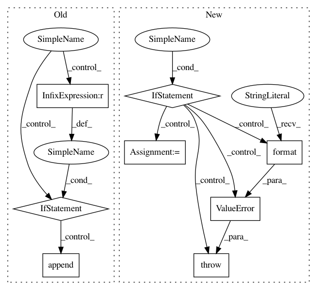

136874cacff5ae68ad1ba0d3bec730cc1261f9e9,io/eolearn/io/processing_api.py,SentinelHubProcessingInput,get_dates,#SentinelHubProcessingInput#,102
Before Change
cleaned_dates = [dates[0]]
for curr_date in dates[1:]:
if curr_date - cleaned_dates[-1] > self.time_difference:
cleaned_dates.append(curr_date)
return cleaned_dates
def execute(self, eopatch=None):
""" Make a WFS request to get valid dates, download an image for each valid date and store it in an EOPatch
After Change
dates = wfs.get_dates()
if len(dates) == 0:
raise ValueError("No available images for requested time range: {}".format(self.time_range))
dates = sorted(dates)
dates = [dates[0]] + [d2 for d1, d2 in zip(dates[:-1], dates[1:]) if d2 - d1 > self.time_difference]
return dates
def execute(self, eopatch=None):
In pattern: SUPERPATTERN
Frequency: 3
Non-data size: 8
Instances
Project Name: sentinel-hub/eo-learn
Commit Name: 136874cacff5ae68ad1ba0d3bec730cc1261f9e9
Time: 2019-10-14
Author: jovan.visnjic@sinergise.com
File Name: io/eolearn/io/processing_api.py
Class Name: SentinelHubProcessingInput
Method Name: get_dates
Project Name: tensorflow/transform
Commit Name: d7a7dd6fe7106f6501e9995a92153f65238bbb47
Time: 2019-06-21
Author: tf-transform-dev@google.com
File Name: tensorflow_transform/analyzers.py
Class Name: QuantilesCombiner
Method Name: add_input
Project Name: tensorflow/transform
Commit Name: 998b0e8f1c3ec165fc1ca7b6421c96b1c72ec297
Time: 2018-05-30
Author: tf-transform-dev@google.com
File Name: tensorflow_transform/analyzers.py
Class Name: Analyzer
Method Name: __init__